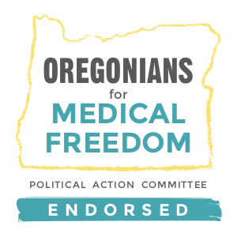

Рольф Шулер для округу Орегон 44
Вам зараз краще, ніж два роки тому?
Чи зараз світ безпечніший, ніж два роки тому?
Я балотуюся від Орегонського округу 44, і мені потрібен ваш голос у листопаді.
Хто я? Я - твій сусід. Народившись і виріс у північному Портленді (Оверлук), я жив в інших куточках земної кулі, але повернувся в Портленд 2008 року. Я провів три роки, живучи в колишній Радянській Центральній Азії, і можу сказати вам з власного досвіду, від соціалізму - мало хорошого.
Я — кандидат який відмовляється від внесків на кампанію від особливих інтересів із глибокими кишенями. Кожного разу, коли вибачите кандидата з великою кількістю реклами, ви повинні запитати себе: які особливі інтереси настільки прагнуть, щоб цього кандидата було обрано, що вони витрачатимуть тисячі доларів, щоб отримати його обрання? Якщо мене оберуть, я працюватиму для вас, людей.
Кар’єрні політики, яких підтримують особливі інтереси, роблять усе можливе, щоб захопити собі більше влади, зневажаючи при цьому громадян, які їх обрали. Результатом є вищі податки, вищі ціни на все, збільшення кількості безпритульних, вулиці, які більше не є безпечними... Я не політик, я просто громадянин, який хоче покласти кінець безрозсудній дурниці та відвертому ігноруванню верховенства, яке відбувається в Салемі.
Проблеми
Безпритульність
- Пропонуйте допомогу тим, хто хоче стати на ноги. Припиніть поточну політику, яка сприяє безпритульності та створює нескінченну залежність від ваших податків.
- Допоможіть не урядовим організаціям, незміцнюйте бюрократію. Основна мета більшості державних бюрократій – виправдати своє існування. Отже, багато бюрократії посилюють проблему, для вирішення якої вони були створені, змушуючи населення, якому вони мають намір допомогти, ставати залежним від їхніх «послуг», вимагаючи збільшення податкових надходжень.<.li>
- Доступ не житло неповинно потребувати державних програм. Навпаки, потрібно взяти під контроль інфляцію, високі процентні ставки та надмірне оподаткування. Домоволодіння повинно бути доступним для громадян робітничого класу.
податки
- У цей сезон безпрецедентної інфляції нам потрібно знизити податковий тягар, а не збільшувати його.
- Скасувати 2013 SB810 – податок за милю, оскільки він був створений без схвалення виборців. Податок за милю вимагає надмірного та інвазивного збору державних даних. Дохід від податку на газ, втрачений через електричні транспортні засоби (EV), можна компенсувати податком на зарядні станції для електромобілів, який не потребує інвазивного збору даних і буде порівнянний з існуючими податками на газ.
- Скасувати податок на валову виручку. Цей податок загрожує багатьом підприємствам, які працюють із низькою нормою прибутку, таким як незалежні ферми та будинки престарілих. Оподаткування валової виручки просто неправильно.
Охорона здоров'я
- Покращити медичний доступ. В Орегоні не вистачає лікарів, особливо в сільській місцевості. У порівнянні з багатьма штатами низькі розміри від шкодування Medicaid у поєднанні з високою вартістю життя роблять Орегон не привабливим місцем для лікарів загальної практики. Давайте створимо податкові пільги, щоб компенсувати високувартість життя, щоб залучити більше лікарів до Орегону. Це може відбуватися як нарівні штату, так і на рівні округу.
- Дозвольте лікарям займатися медичною діяльністю без втручання політично мотивованих державних чи федеральних бюрократів.
- Без мандатів. Вони узурпують стосунки між пацієнтом і лікарем за допомогою тиранічної, без особової бюрократичної надмірності.
Чесність виборів
Голосувати є правом громадян. Усі права мають обов’язки, і жодне право не можна нав’язувати громадянину, який не бажає нести відповідальність. Володіння зброєю також є правом. Але було б необачно нав’язувати це право громадянам, які не хочуть нести цю відповідальність. Хоча громадян, які мають право, завжди слід заохочувати брати участь у нашому виборчому процесі, необхідно подбати про те, щоб звести до мініму муможливість фальсифікації голосування. Маючи це на увазі...
- Тримайте списки виборців в чистоті. Виборці, які були не активні протягом двох і більше років, повинні автоматично виключатися зі списків виборців.
- Припинення автоматичної реєстрації виборців у DMV. Реєстрація виборців завжди має бути свідомим вибором і вимагати документів для підтвердження відповідності. Коли виборець стає зареєстрованим, реєстраційний орган повинен докласти розумних зусиль, щоб переконатися, що будь-яка попередня реєстрація стерта, щоб уникнути багато разової реєстрації.
- Припиніть автоматичне голосування поштою та поверніться до звичайних виборчих дільниць із паперовими бюлетенями. Це чудовий спосіб познайомитися з сусідами! Бюлетені для голосування поштою мають бути доступні лише за запитом. Не слід допускати пізнє надсилання бюлетенів поштою, оскільки це є запрошенням до шахрайства. Електронні машини для голосування повинні бути заборонені, оскільки ними легко маніпулювати та важко перевірити.
- Другий тур виборів має бути необхідним, якщо жоден з кандидатів не отримує більше 50% голосів у змагальних перегонах
Дякуємо за ваш голос. Я не зможу зробити це без вас, але разом ми зможемо повернути здоровий глузд Салему.
Оплачено: Друзі Рольфа Шулер • PO Box 17444 • Portland OR 97217
